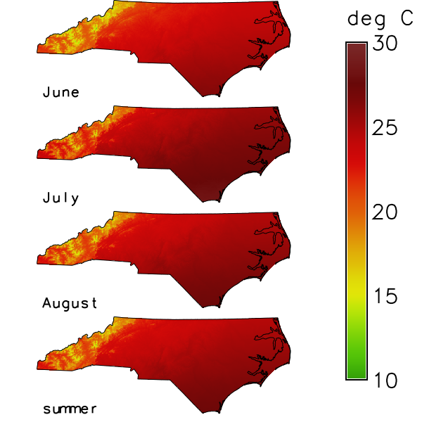

1 months, for instance. The tool runs
r.series for every granule, so the methods and the results
are those of r.series. See the
introduction to temporal data processing for space time
datasets, and t.rast.aggregate.ds for granules
that are given by the maps of another dataset.
The option input names the space time raster dataset; input=name.label
selects the maps of one semantic label. The option output names the new
space time raster dataset. It takes the temporal type, the semantic type, the
title and the description of the input dataset; its aggregation type is the
method. The option where takes an SQL condition on the registered maps
and selects the input maps, for instance by their start_time; without it,
all maps are used.
1 months or 12 hours; the units
are seconds, minutes, hours, days, weeks, months and years.
In relative time it is an integer, counted in the unit of the input dataset.
The first granule starts at the start of the first selected map, moved back to the beginning of the unit of the granularity: a year to 1 January, a month to the first of the month, a day to 00:00:00, an hour to the full hour, a minute to the full minute. The fourth example shows this for each unit. The grid ends with the granule that holds the end of the last map, or the last map itself if it is a time instant.
The option sampling is a list of temporal relations, contains by
default; it sets which maps belong to a granule. The relation is read from the
granule: with contains, a map lies within the granule; with equal, the map
has the start and the end of the granule; with overlaps, the granule starts
before the map starts and ends within the map. The other relations are
overlapped, starts, started, finishes, finished and during.
Several relations are separated by commas; a map that fits two of them, for
instance during and starts, is aggregated once. The fifth example shows
contains, overlaps and equal.
average (the
default), count, median, mode, minimum, min_raster, maximum,
max_raster, stddev, range, sum, variance, diversity, slope,
offset, detcoeff, quart1, quart3, perc90, quantile, skewness and
kurtosis. The maps of a granule are read in the order of their time, which
matters for min_raster, max_raster, slope, offset and detcoeff.
r.series skips null cells, so a cell is aggregated over the maps that have a
value there. The method quantile has no quantile option in this tool, so
r.series uses the quantile 0, and the result is the smallest value.
The flag -n registers the maps whose cells are all null. Without it, a granule whose related maps hold only null cells gives no new map. A granule without any related map gives no map in either case.
gran (the default) takes the start time of the granule, cut to the unit of
the granularity: 2026 for years, 2026_01 for months, 2026_01_12 for
days or weeks, 2026_01_14_12 for hours and 2026_01_14_12_30 for minutes;time takes the full start time, for instance 2026_01_01T00_00_00;num takes the number of the granule, from 1, with five digits; num%NN
takes NN digits, so num%03 gives 001.
The option offset is added to the number of num, 0 by default. A
granule without a related map gives no map, but its number is used, so a
numbered series can have a gap. In relative time, every suffix gives the
number, because a relative time has no calendar date.
1000 by default) or when 2 x threads x maps + 64 exceeds the
limit of open files of the process (ulimit -n). The threads are counted from
NPROCS of the GRASS session (see g.gisenv), else OMP_NUM_THREADS, else
the usable processors. With a raster mask (see r.mask), r.series runs one
thread, and so does the count. In a GRASS built without OpenMP, r.series
runs one thread; the count does not know this and may set -z earlier than
needed. The tool warns whenever it sets the flag. Without a limit on open
files, or without the Python module resource (for example on Windows),
file_limit alone counts. The flag does not change the result but is
slower: for 100 maps of 1000 x 1000 cells, r.series took 5.2 s with -z
instead of 0.25 s (measured 31.10.2026 with method sum, three runs). The eighth
example sets a low file_limit.
The option nprocs sets how many granules are aggregated at the same time,
1 by default; a value below 1 runs one process. The result does not depend
on nprocs.
A granule with a single related map is copied as it is: the method does not
matter, and the value, the type of the map (CELL stays CELL) and its colour
table stay as they were.
An existing output dataset is replaced only with --overwrite; without it the tool refuses with one message. The tool stops before the computation if the name of a new map equals the name of a map of the input dataset in the current mapset.
A dot in the name of the new dataset is refused, for instance for
output=my.out, with the message "<my.out> is not a valid name for a new
space time dataset: a dot is not allowed".
The input dataset can be in another mapset of the project; the name with the
mapset (input=temperature_monthly@t_rast_aggregate) selects it; the last
example adds that mapset to the search path with g.mapsets first. The new
maps and the new dataset are always created in the current mapset.
If no map is related to any granule, the tool warns, names the granularity and
the sampling, and creates no dataset; it ends without an error. With monthly
granules and maps that do not start on the first day of a month, for example a
series that starts on 31 January, the default sampling contains finds
nothing; sampling=overlaps relates each map to the granule in which it
starts and which it outlasts.
Wrong input stops the tool with a message before anything is written:
<name> of
type <strds> not found".<name> is
empty". An SQL error in where gives a message that begins with "Invalid
where condition".<gram>, use gran, time,
num or num%NN" for suffix=gram.2, the message is "Invalid granularity
<2>".<1.5>") or not positive ("The granularity 0 must be
positive").
For granularity in weeks, the start of the first granule is wrong when
the first selected map starts in the first days of a month: when the day of
its month is not greater than the number of its weekday, counted from Monday
as 0. The first granule then starts after that map and does not contain it.
If no other map is related to a granule, the tool warns and creates no dataset;
the fourth example shows this. With granularity="7 days", the first granule
starts at 00:00:00 on the day of the first map, so the granules are not tied to
Mondays.
nc_spm_08_grass7 from
the GRASS sample data. The first
example creates the mapset t_rast_aggregate and sets the computational
region to North Carolina with cells of 1 km; the later examples work in this
mapset and region, except the last, which creates a second mapset with the
same region. The examples that show how granules and sampling work use
maps with small constant values, so that the results can be checked by hand.
temperature_monthly holds twelve maps of the monthly mean air
temperature in 2020, in degrees Celsius rounded to tenths. They are generated
from the elevation model elev_state_500m: 16.5 degrees at sea level and the
northing 160 km, an annual cycle of plus and minus 10.5 degrees with its
maximum in July, 6.5 degrees less for every 1000 m of elevation, and 1 degree
more for every 100 km to the south. Each map is an interval of one month.
The where condition selects the maps from March to November, and
granularity 3 months makes the granules March to May, June to August and
September to November: spring, summer and autumn. The first granule starts on
March 1, the start of the first selected map. method average gives, in
each cell, the mean of the three monthly maps of a season. The list shows the
new maps with their granules and their smallest and largest value. In summer
the warmest cell has 26.5, 28.4 and 27.6 degrees in June, July and August, so
its mean is 27.5 degrees. Autumn is warmer than spring, because the annual
cycle (cos(30 * (month - 7.2))) has its maximum a little after the July
map.
Command line:
g.mapset -c mapset=t_rast_aggregate
g.region raster=elev_state_500m res=1000 -a
for month in $(seq 12); do
echo "temperature_monthly_2020_$(printf %02d $month) = round((16.5" \
"+ 10.5 * cos(30 * ($month - 7.2)) - 0.0065 * elev_state_500m" \
"- 0.00001 * (y() - 160000)) * 10) / 10.0"
done | r.mapcalc file=-
t.create output=temperature_monthly title="Air temperature" \
description="Monthly mean air temperature 2020 in degree Celsius"
t.register -i input=temperature_monthly \
maps=$(g.list type=raster pattern="temperature_monthly_*" mapset=. separator=comma) \
start=2020-01-01 increment="1 month"
t.rast.aggregate input=temperature_monthly output=temperature_season \
basename=temperature_season granularity="3 months" method=average \
where="start_time >= '2020-03-01' and start_time < '2020-12-01'"
t.rast.list input=temperature_season columns=name,start_time,end_time,min,max
name|start_time|end_time|min|max temperature_season_2020_03|2020-03-01 00:00:00|2020-06-01 00:00:00|2.466666666666667|16.966666666666665 temperature_season_2020_06|2020-06-01 00:00:00|2020-09-01 00:00:00|13.0|27.5 temperature_season_2020_09|2020-09-01 00:00:00|2020-12-01 00:00:00|4.466666666666666|19.0
Python (grass.tools):
from grass.tools import Tools
tools = Tools()
tools.g_mapset(flags="c", mapset="t_rast_aggregate")
tools.g_region(raster="elev_state_500m", res=1000, flags="a")
months = range(1, 13)
tools.r_mapcalc(
expression="\n".join(
f"temperature_monthly_2020_{month:02d} = round((16.5"
f" + 10.5 * cos(30 * ({month} - 7.2)) - 0.0065 * elev_state_500m"
" - 0.00001 * (y() - 160000)) * 10) / 10.0"
for month in months
)
)
tools.t_create(
output="temperature_monthly",
title="Air temperature",
description="Monthly mean air temperature 2020 in degree Celsius",
)
tools.t_register(
input="temperature_monthly",
maps=",".join(f"temperature_monthly_2020_{month:02d}" for month in months),
start="2020-01-01",
increment="1 month",
flags="i",
)
tools.t_rast_aggregate(
input="temperature_monthly",
output="temperature_season",
basename="temperature_season",
granularity="3 months",
method="average",
where="start_time >= '2020-03-01' and start_time < '2020-12-01'",
)
columns = "name,start_time,end_time,min,max"
print(tools.t_rast_list(input="temperature_season", columns=columns).text)
name|start_time|end_time|min|max temperature_season_2020_03|2020-03-01 00:00:00|2020-06-01 00:00:00|2.466666666666667|16.966666666666665 temperature_season_2020_06|2020-06-01 00:00:00|2020-09-01 00:00:00|13.0|27.5 temperature_season_2020_09|2020-09-01 00:00:00|2020-12-01 00:00:00|4.466666666666666|19.0
nc_state. t.rast.colors
gives the maps of both datasets the colour table celsius, which fixes a
colour for each temperature, so the same colour means the same temperature in
all four maps. d.frame makes one frame per map, d.rast draws the map,
d.vect the border and d.text the name; d.legend draws the legend in a
frame of its own.
Command line:
t.rast.colors input=temperature_monthly color=celsius
t.rast.colors input=temperature_season color=celsius
d.mon start=cairo output=t_rast_aggregate_summer.png width=600 height=600
row=0
for map in "temperature_monthly_2020_06 June" \
"temperature_monthly_2020_07 July" \
"temperature_monthly_2020_08 August" \
"temperature_season_2020_06 summer"; do
set -- $map
top=$((100 - 25 * row))
d.frame -c frame=map_$row at=$((top - 25)),$top,0,80
d.rast map=$1
d.vect map=nc_state type=boundary color=black
d.text text=$2 at=2,8 size=14 color=black
row=$((row + 1))
done
d.frame -c frame=legend at=0,100,80,100
d.legend raster=temperature_season_2020_06 range=10,30 at=10,90,10,35 \
label_step=5 digits=0 title="deg C"
d.mon stop=cairo
Python (grass.tools):
tools.t_rast_colors(input="temperature_monthly", color="celsius")
tools.t_rast_colors(input="temperature_season", color="celsius")
tools.d_mon(start="cairo", output="t_rast_aggregate_summer.png", width=600, height=600)
for row, (name, label) in enumerate(
(
("temperature_monthly_2020_06", "June"),
("temperature_monthly_2020_07", "July"),
("temperature_monthly_2020_08", "August"),
("temperature_season_2020_06", "summer"),
)
):
top = 100 - 25 * row
tools.d_frame(flags="c", frame=f"map_{row}", at=[top - 25, top, 0, 80])
tools.d_rast(map=name)
tools.d_vect(map="nc_state", type="boundary", color="black")
tools.d_text(text=label, at=[2, 8], size=14, color="black")
tools.d_frame(flags="c", frame="legend", at=[0, 100, 80, 100])
tools.d_legend(
raster="temperature_season_2020_06",
range=[10, 30],
at=[10, 90, 10, 35],
label_step=5,
digits=0,
title="deg C",
)
tools.d_mon(stop="cairo")

Figure: Mean air temperature of June, July and August 2020 and, at the bottom, their mean for the summer.
maximum with suffix time gives, in each cell, the
temperature of the warmest month of each season and names the maps with
the full start time. In summer, this is July: 13.9 to 28.4 degrees.minimum with suffix num%03 and offset 10 gives the
temperature of the coldest month and numbers the maps with three digits,
counting from 1 plus the offset: 11, 12 and 13. In spring, this is March,
in autumn November.precipitation_monthly, monthly
precipitation sums in whole millimetres that are generated from the 30-year
normals, not measured: the monthly normal of the climate stations of
precip_30ynormals (the columns jan to dec), interpolated with
v.surf.idw, times an assumed factor for each month of a wet year 2020.
granularity 2 months with method sum gives the precipitation of
January and February, March and April, and so on. The monthly sums are
whole numbers, and so are their sums, so the statistics of
t.rast.univar do not depend on the order in which the
cells are added up; the block shows the smallest, the largest and the mean
value of each new map.Command line:
t.rast.aggregate input=temperature_monthly output=temperature_warmest \
basename=temperature_warmest granularity="3 months" method=maximum \
suffix=time where="start_time >= '2020-03-01' and start_time < '2020-12-01'"
t.rast.list input=temperature_warmest columns=name,start_time,min,max
name|start_time|min|max temperature_warmest_2020_03_01T00_00_00|2020-03-01 00:00:00|7.7|22.2 temperature_warmest_2020_06_01T00_00_00|2020-06-01 00:00:00|13.9|28.4 temperature_warmest_2020_09_01T00_00_00|2020-09-01 00:00:00|9.6|24.2
t.rast.aggregate input=temperature_monthly output=temperature_coldest \
basename=temperature_coldest granularity="3 months" method=minimum \
suffix=num%03 offset=10 \
where="start_time >= '2020-03-01' and start_time < '2020-12-01'"
t.rast.list input=temperature_coldest columns=name,start_time,min,max
name|start_time|min|max temperature_coldest_011|2020-03-01 00:00:00|-2.7|11.8 temperature_coldest_012|2020-06-01 00:00:00|12.0|26.5 temperature_coldest_013|2020-09-01 00:00:00|-0.8|13.7
month=1
for entry in jan:1.2 feb:1.7 mar:0.9 apr:1.3 may:1.6 jun:0.9 \
jul:1.1 aug:1.5 sep:0.8 oct:1.0 nov:1.6 dec:0.9; do
name=$(printf %02d $month)
v.surf.idw input=precip_30ynormals column=${entry%:*} \
output=precipitation_normal_$name npoints=12 power=2
r.mapcalc expression="precipitation_monthly_2020_$name = if(isnull(elev_state_500m), null(), round(${entry#*:} * precipitation_normal_$name))"
month=$((month + 1))
done
t.create output=precipitation_monthly title="Precipitation" \
description="Monthly precipitation sum 2020 in mm"
t.register -i input=precipitation_monthly \
maps=$(g.list type=raster pattern="precipitation_monthly_*" mapset=. separator=comma) \
start=2020-01-01 increment="1 month"
t.rast.aggregate input=precipitation_monthly output=precipitation_bimonthly \
basename=precipitation_bimonthly granularity="2 months" method=sum
t.rast.univar input=precipitation_bimonthly | cut -d"|" -f1,7,8,10
id|min|max|mean precipitation_bimonthly_2020_01@t_rast_aggregate|232|558|296.33885217799 precipitation_bimonthly_2020_03@t_rast_aggregate|184|443|220.397210297285 precipitation_bimonthly_2020_05@t_rast_aggregate|217|501|273.625771050974 precipitation_bimonthly_2020_07@t_rast_aggregate|210|514|330.528944630848 precipitation_bimonthly_2020_09@t_rast_aggregate|120|303|188.309797658642 precipitation_bimonthly_2020_11@t_rast_aggregate|174|518|219.85562848896
Python (grass.tools):
seasons = "start_time >= '2020-03-01' and start_time < '2020-12-01'"
tools.t_rast_aggregate(
input="temperature_monthly",
output="temperature_warmest",
basename="temperature_warmest",
granularity="3 months",
method="maximum",
suffix="time",
where=seasons,
)
columns = "name,start_time,min,max"
print(tools.t_rast_list(input="temperature_warmest", columns=columns).text)
name|start_time|min|max temperature_warmest_2020_03_01T00_00_00|2020-03-01 00:00:00|7.7|22.2 temperature_warmest_2020_06_01T00_00_00|2020-06-01 00:00:00|13.9|28.4 temperature_warmest_2020_09_01T00_00_00|2020-09-01 00:00:00|9.6|24.2
tools.t_rast_aggregate(
input="temperature_monthly",
output="temperature_coldest",
basename="temperature_coldest",
granularity="3 months",
method="minimum",
suffix="num%03",
offset=10,
where=seasons,
)
print(tools.t_rast_list(input="temperature_coldest", columns=columns).text)
name|start_time|min|max temperature_coldest_011|2020-03-01 00:00:00|-2.7|11.8 temperature_coldest_012|2020-06-01 00:00:00|12.0|26.5 temperature_coldest_013|2020-09-01 00:00:00|-0.8|13.7
factors = {"jan": 1.2, "feb": 1.7, "mar": 0.9, "apr": 1.3, "may": 1.6, "jun": 0.9}
factors |= {"jul": 1.1, "aug": 1.5, "sep": 0.8, "oct": 1.0, "nov": 1.6, "dec": 0.9}
for month, (column, factor) in enumerate(factors.items(), start=1):
normal = f"precipitation_normal_{month:02d}"
tools.v_surf_idw(
input="precip_30ynormals", column=column, output=normal, npoints=12, power=2
)
tools.r_mapcalc(
expression=f"precipitation_monthly_2020_{month:02d} ="
f" if(isnull(elev_state_500m), null(), round({factor} * {normal}))"
)
tools.t_create(
output="precipitation_monthly",
title="Precipitation",
description="Monthly precipitation sum 2020 in mm",
)
tools.t_register(
input="precipitation_monthly",
maps=",".join(f"precipitation_monthly_2020_{month:02d}" for month in months),
start="2020-01-01",
increment="1 month",
flags="i",
)
tools.t_rast_aggregate(
input="precipitation_monthly",
output="precipitation_bimonthly",
basename="precipitation_bimonthly",
granularity="2 months",
method="sum",
)
for line in tools.t_rast_univar(input="precipitation_bimonthly").text.splitlines():
fields = line.split("|")
print("|".join(fields[index] for index in (0, 6, 7, 9)))
id|min|max|mean precipitation_bimonthly_2020_01@t_rast_aggregate|232|558|296.33885217799 precipitation_bimonthly_2020_03@t_rast_aggregate|184|443|220.397210297285 precipitation_bimonthly_2020_05@t_rast_aggregate|217|501|273.625771050974 precipitation_bimonthly_2020_07@t_rast_aggregate|210|514|330.528944630848 precipitation_bimonthly_2020_09@t_rast_aggregate|120|303|188.309797658642 precipitation_bimonthly_2020_11@t_rast_aggregate|174|518|219.85562848896
gusts holds three readings of the wind gust speed, 1, 2 and 3
m/s in every cell, as time instants on 14 January 2026, a Wednesday, at
12:30:45, 12:31:10 and 12:31:35. The first two blocks aggregate it with six
granularities, from years to minutes, and list the new maps of each. The
first granule starts at the beginning of the unit of the granularity:
2026-01-01 for years, 2026-01-01 for months, 2026-01-12 (the Monday) for
weeks, 2026-01-14 for days, 12:00:00 for hours and 12:30:00 for minutes.
With minutes, the first instant (12:30:45) lies in the granule from 12:30 and
the other two (12:31:10 and 12:31:35) in the granule from 12:31, so there are
two granules. method maximum gives the strongest gust of each granule.
The third block shows the trap of the weeks. The dataset frost holds one
map of a night frost at 3 January 2026, a Saturday, which has the weekday
number 5 and lies on the 3rd, a day not greater than 5. The tool warns that no
map is related to any granule, because the first granule starts after the
map, and creates no dataset, as the list of the datasets shows; with
7 days, the granule starts on the day of the map.
Command line:
r.mapcalc expression="gust_1 = 1"
r.mapcalc expression="gust_2 = 2"
r.mapcalc expression="gust_3 = 3"
t.create output=gusts title="Wind gusts" \
description="Wind gust speed in m/s at three instants"
t.register input=gusts maps=gust_1,gust_2,gust_3 \
start="2026-01-14 12:30:45" increment="25 seconds"
for unit in years months weeks; do
t.rast.aggregate input=gusts output=gusts_$unit basename=gusts_$unit \
granularity="1 $unit" method=maximum
t.rast.list input=gusts_$unit columns=name,start_time,end_time
done
name|start_time|end_time gusts_years_2026|2026-01-01 00:00:00|2027-01-01 00:00:00 name|start_time|end_time gusts_months_2026_01|2026-01-01 00:00:00|2026-02-01 00:00:00 name|start_time|end_time gusts_weeks_2026_01_12|2026-01-12 00:00:00|2026-01-19 00:00:00
for unit in days hours minutes; do
t.rast.aggregate input=gusts output=gusts_$unit basename=gusts_$unit \
granularity="1 $unit" method=maximum
t.rast.list input=gusts_$unit columns=name,start_time,end_time
done
name|start_time|end_time gusts_days_2026_01_14|2026-01-14 00:00:00|2026-01-15 00:00:00 name|start_time|end_time gusts_hours_2026_01_14_12|2026-01-14 12:00:00|2026-01-14 13:00:00 name|start_time|end_time gusts_minutes_2026_01_14_12_30|2026-01-14 12:30:00|2026-01-14 12:31:00 gusts_minutes_2026_01_14_12_31|2026-01-14 12:31:00|2026-01-14 12:32:00
r.mapcalc expression="frost_1 = 1"
t.create output=frost title="Frost" description="One night frost in a first week"
t.register input=frost maps=frost_1 start=2026-01-03
t.rast.aggregate input=frost output=frost_weeks basename=frost_weeks \
granularity="1 weeks" method=sum
t.rast.aggregate input=frost output=frost_days basename=frost_days \
granularity="7 days" method=sum
t.rast.list input=frost_days columns=name,start_time,end_time
t.list type=strds columns=name where="name LIKE 'frost%'"
name|start_time|end_time frost_days_2026_01_03|2026-01-03 00:00:00|2026-01-10 00:00:00 frost frost_days
Python (grass.tools):
for number in (1, 2, 3):
tools.r_mapcalc(expression=f"gust_{number} = {number}")
tools.t_create(
output="gusts",
title="Wind gusts",
description="Wind gust speed in m/s at three instants",
)
tools.t_register(
input="gusts",
maps="gust_1,gust_2,gust_3",
start="2026-01-14 12:30:45",
increment="25 seconds",
)
for unit in ("years", "months", "weeks"):
tools.t_rast_aggregate(
input="gusts",
output=f"gusts_{unit}",
basename=f"gusts_{unit}",
granularity=f"1 {unit}",
method="maximum",
)
print(
tools.t_rast_list(
input=f"gusts_{unit}", columns="name,start_time,end_time"
).text
)
name|start_time|end_time gusts_years_2026|2026-01-01 00:00:00|2027-01-01 00:00:00 name|start_time|end_time gusts_months_2026_01|2026-01-01 00:00:00|2026-02-01 00:00:00 name|start_time|end_time gusts_weeks_2026_01_12|2026-01-12 00:00:00|2026-01-19 00:00:00
for unit in ("days", "hours", "minutes"):
tools.t_rast_aggregate(
input="gusts",
output=f"gusts_{unit}",
basename=f"gusts_{unit}",
granularity=f"1 {unit}",
method="maximum",
)
print(
tools.t_rast_list(
input=f"gusts_{unit}", columns="name,start_time,end_time"
).text
)
name|start_time|end_time gusts_days_2026_01_14|2026-01-14 00:00:00|2026-01-15 00:00:00 name|start_time|end_time gusts_hours_2026_01_14_12|2026-01-14 12:00:00|2026-01-14 13:00:00 name|start_time|end_time gusts_minutes_2026_01_14_12_30|2026-01-14 12:30:00|2026-01-14 12:31:00 gusts_minutes_2026_01_14_12_31|2026-01-14 12:31:00|2026-01-14 12:32:00
tools.r_mapcalc(expression="frost_1 = 1")
tools.t_create(
output="frost", title="Frost", description="One night frost in a first week"
)
tools.t_register(input="frost", maps="frost_1", start="2026-01-03")
tools.t_rast_aggregate(
input="frost",
output="frost_weeks",
basename="frost_weeks",
granularity="1 weeks",
method="sum",
)
tools.t_rast_aggregate(
input="frost",
output="frost_days",
basename="frost_days",
granularity="7 days",
method="sum",
)
print(tools.t_rast_list(input="frost_days", columns="name,start_time,end_time").text)
print(tools.t_list(type="strds", columns="name", where="name LIKE 'frost%'").text)
name|start_time|end_time frost_days_2026_01_03|2026-01-03 00:00:00|2026-01-10 00:00:00 frost frost_days
dekads holds four sums of precipitation over ten days,
rain_dekad_1 to rain_dekad_4, with 1 to 4 mm in every cell. The maps
follow each other: rain_dekad_1 runs from 21 to 31 January, rain_dekad_2
from 31 January to 10 February, rain_dekad_3 from 10 to 20 February and
rain_dekad_4 from 20 February to 2 March. Two maps cross the border of a
month.
With the default sampling contains and monthly granules, only
rain_dekad_1 lies within January and only rain_dekad_3 within February:
each granule has a single map and copies it, so the new maps hold 1 and 3.
With contains,overlaps, the granule January also takes rain_dekad_2,
because the granule starts before the map and ends within it, and the granule
February takes rain_dekad_4; the sums are 1 + 2 = 3 and 3 + 4 = 7. The third
block adds where, which leaves out the maps that start before February:
only rain_dekad_3 and rain_dekad_4 are left, and the first granule starts
on 1 February, the beginning of the month of rain_dekad_3. The fourth block
aggregates the seasonal means of the first example: each has the start and the
end of a granule of 3 months, so sampling equal relates it to that
granule, and the granule copies it.
Command line:
for number in 1 2 3 4; do
r.mapcalc expression="rain_dekad_$number = $number"
done
t.create output=dekads title="Precipitation" \
description="Precipitation sum in mm over ten days"
t.register input=dekads maps=rain_dekad_1 start=2026-01-21 end=2026-01-31
t.register input=dekads maps=rain_dekad_2 start=2026-01-31 end=2026-02-10
t.register input=dekads maps=rain_dekad_3 start=2026-02-10 end=2026-02-20
t.register input=dekads maps=rain_dekad_4 start=2026-02-20 end=2026-03-02
t.rast.aggregate input=dekads output=rain_contained basename=rain_contained \
granularity="1 months" method=sum
t.rast.list input=rain_contained columns=name,start_time,min,max
name|start_time|min|max rain_contained_2026_01|2026-01-01 00:00:00|1.0|1.0 rain_contained_2026_02|2026-02-01 00:00:00|3.0|3.0
t.rast.aggregate input=dekads output=rain_touched basename=rain_touched \
granularity="1 months" method=sum sampling=contains,overlaps
t.rast.list input=rain_touched columns=name,start_time,min,max
name|start_time|min|max rain_touched_2026_01|2026-01-01 00:00:00|3.0|3.0 rain_touched_2026_02|2026-02-01 00:00:00|7.0|7.0
t.rast.aggregate input=dekads output=rain_february basename=rain_february \
granularity="1 months" method=sum sampling=contains,overlaps \
where="start_time >= '2026-02-01'"
t.rast.list input=rain_february columns=name,start_time,min,max
name|start_time|min|max rain_february_2026_02|2026-02-01 00:00:00|7.0|7.0
t.rast.aggregate input=temperature_season output=temperature_copied \
basename=temperature_copied granularity="3 months" sampling=equal
t.rast.list input=temperature_copied columns=name,start_time,min,max
name|start_time|min|max temperature_copied_2020_03|2020-03-01 00:00:00|2.466666666666667|16.966666666666665 temperature_copied_2020_06|2020-06-01 00:00:00|13.0|27.5 temperature_copied_2020_09|2020-09-01 00:00:00|4.466666666666666|19.0
Python (grass.tools):
for number in (1, 2, 3, 4):
tools.r_mapcalc(expression=f"rain_dekad_{number} = {number}")
tools.t_create(
output="dekads",
title="Precipitation",
description="Precipitation sum in mm over ten days",
)
for number, start, end in (
(1, "2026-01-21", "2026-01-31"),
(2, "2026-01-31", "2026-02-10"),
(3, "2026-02-10", "2026-02-20"),
(4, "2026-02-20", "2026-03-02"),
):
tools.t_register(input="dekads", maps=f"rain_dekad_{number}", start=start, end=end)
tools.t_rast_aggregate(
input="dekads",
output="rain_contained",
basename="rain_contained",
granularity="1 months",
method="sum",
)
print(tools.t_rast_list(input="rain_contained", columns=columns).text)
name|start_time|min|max rain_contained_2026_01|2026-01-01 00:00:00|1.0|1.0 rain_contained_2026_02|2026-02-01 00:00:00|3.0|3.0
tools.t_rast_aggregate(
input="dekads",
output="rain_touched",
basename="rain_touched",
granularity="1 months",
method="sum",
sampling="contains,overlaps",
)
print(tools.t_rast_list(input="rain_touched", columns=columns).text)
name|start_time|min|max rain_touched_2026_01|2026-01-01 00:00:00|3.0|3.0 rain_touched_2026_02|2026-02-01 00:00:00|7.0|7.0
tools.t_rast_aggregate(
input="dekads",
output="rain_february",
basename="rain_february",
granularity="1 months",
method="sum",
sampling="contains,overlaps",
where="start_time >= '2026-02-01'",
)
print(tools.t_rast_list(input="rain_february", columns=columns).text)
name|start_time|min|max rain_february_2026_02|2026-02-01 00:00:00|7.0|7.0
tools.t_rast_aggregate(
input="temperature_season",
output="temperature_copied",
basename="temperature_copied",
granularity="3 months",
sampling="equal",
)
print(tools.t_rast_list(input="temperature_copied", columns=columns).text)
name|start_time|min|max temperature_copied_2020_03|2020-03-01 00:00:00|2.466666666666667|16.966666666666665 temperature_copied_2020_06|2020-06-01 00:00:00|13.0|27.5 temperature_copied_2020_09|2020-09-01 00:00:00|4.466666666666666|19.0
radar holds five maps of daily precipitation from a weather
radar. In January, radar_1 has 4 mm in every cell and radar_2 has 6 mm,
except west of the easting 500 km, where the radar failed and the cells are
null. In February the radar failed on both days: radar_3 and radar_4 have
only null cells. March has radar_5 with 5 mm. The January average skips the
null cells: west of 500 km it holds 4 mm, taken from radar_1 alone, and east
of it (4 + 6) / 2 = 5 mm, so the smallest value is 4 and the largest 5.
Without -n, February gives no map, because all its cells are null, so the
dataset has two maps. The second block aggregates again with -n; the
--overwrite replaces the dataset of the first block and its maps. February
is now registered, and its map has no smallest and no largest value, which the
list shows as None.
Command line:
r.mapcalc expression="radar_1 = 4"
r.mapcalc expression="radar_2 = if(x() < 500000, null(), 6)"
r.mapcalc expression="radar_3 = null()"
r.mapcalc expression="radar_4 = null()"
r.mapcalc expression="radar_5 = 5"
t.create output=radar title="Precipitation" \
description="Daily precipitation in mm from a weather radar"
t.register input=radar maps=radar_1,radar_2 start=2026-01-01 increment="10 days"
t.register input=radar maps=radar_3,radar_4 start=2026-02-01 increment="10 days"
t.register input=radar maps=radar_5 start=2026-03-01
t.rast.aggregate input=radar output=radar_monthly basename=radar \
granularity="1 months" method=average
t.rast.list input=radar_monthly columns=name,start_time,min,max
name|start_time|min|max radar_2026_01|2026-01-01 00:00:00|4.0|5.0 radar_2026_03|2026-03-01 00:00:00|5.0|5.0
t.rast.aggregate -n input=radar output=radar_monthly basename=radar \
granularity="1 months" method=average --overwrite
t.rast.list input=radar_monthly columns=name,start_time,min,max
name|start_time|min|max radar_2026_01|2026-01-01 00:00:00|4.0|5.0 radar_2026_02|2026-02-01 00:00:00|None|None radar_2026_03|2026-03-01 00:00:00|5.0|5.0
Python (grass.tools):
tools.r_mapcalc(expression="radar_1 = 4")
tools.r_mapcalc(expression="radar_2 = if(x() < 500000, null(), 6)")
tools.r_mapcalc(expression="radar_3 = null()")
tools.r_mapcalc(expression="radar_4 = null()")
tools.r_mapcalc(expression="radar_5 = 5")
tools.t_create(
output="radar",
title="Precipitation",
description="Daily precipitation in mm from a weather radar",
)
for maps, start in (
("radar_1,radar_2", "2026-01-01"),
("radar_3,radar_4", "2026-02-01"),
):
tools.t_register(input="radar", maps=maps, start=start, increment="10 days")
tools.t_register(input="radar", maps="radar_5", start="2026-03-01")
tools.t_rast_aggregate(
input="radar",
output="radar_monthly",
basename="radar",
granularity="1 months",
method="average",
)
print(tools.t_rast_list(input="radar_monthly", columns=columns).text)
name|start_time|min|max radar_2026_01|2026-01-01 00:00:00|4.0|5.0 radar_2026_03|2026-03-01 00:00:00|5.0|5.0
tools.t_rast_aggregate(
input="radar",
output="radar_monthly",
basename="radar",
granularity="1 months",
method="average",
flags="n",
overwrite=True,
)
print(tools.t_rast_list(input="radar_monthly", columns=columns).text)
name|start_time|min|max radar_2026_01|2026-01-01 00:00:00|4.0|5.0 radar_2026_02|2026-02-01 00:00:00|None|None radar_2026_03|2026-03-01 00:00:00|5.0|5.0
runoff holds the simulated runoff of a model, four maps
runoff_1 to runoff_4 with 1 to 4 mm, one for each hour, from 0 to 4. With
the integer granularity 2, the granules are two hours long, in the unit of
the dataset, and the sums are 1 + 2 = 3 and 3 + 4 = 7. In relative time every
suffix gives the number of the granule, so the new maps are numbered with
five digits.
Command line:
for number in 1 2 3 4; do
r.mapcalc expression="runoff_$number = $number"
done
t.create output=runoff temporaltype=relative title="Runoff" \
description="Simulated runoff in mm per model hour"
t.register -i input=runoff maps=runoff_1,runoff_2,runoff_3,runoff_4 \
start=0 increment=1 unit=hours
t.rast.aggregate input=runoff output=runoff_2h basename=runoff_2h \
granularity=2 method=sum
t.rast.list input=runoff_2h columns=name,start_time,end_time,min,max
name|start_time|end_time|min|max runoff_2h_00001|0|2|3.0|3.0 runoff_2h_00002|2|4|7.0|7.0
Python (grass.tools):
for number in (1, 2, 3, 4):
tools.r_mapcalc(expression=f"runoff_{number} = {number}")
tools.t_create(
output="runoff",
temporaltype="relative",
title="Runoff",
description="Simulated runoff in mm per model hour",
)
tools.t_register(
input="runoff",
maps="runoff_1,runoff_2,runoff_3,runoff_4",
start=0,
increment=1,
unit="hours",
flags="i",
)
tools.t_rast_aggregate(
input="runoff",
output="runoff_2h",
basename="runoff_2h",
granularity=2,
method="sum",
)
print(
tools.t_rast_list(
input="runoff_2h", columns="name,start_time,end_time,min,max"
).text
)
name|start_time|end_time|min|max runoff_2h_00001|0|2|3.0|3.0 runoff_2h_00002|2|4|7.0|7.0
1, so the tool runs r.series with the flag
-z and warns once for each granule; the message goes to the error output
and is not shown here. nprocs 3 aggregates three granules at the same
time. The result does not change: the smallest, the largest and the mean value
of each map are those of the third example.
Command line:
t.rast.aggregate input=precipitation_monthly output=precipitation_parallel \
basename=precipitation_parallel granularity="2 months" method=sum \
nprocs=3 file_limit=1
t.rast.univar input=precipitation_parallel | cut -d"|" -f1,7,8,10
id|min|max|mean precipitation_parallel_2020_01@t_rast_aggregate|232|558|296.33885217799 precipitation_parallel_2020_03@t_rast_aggregate|184|443|220.397210297285 precipitation_parallel_2020_05@t_rast_aggregate|217|501|273.625771050974 precipitation_parallel_2020_07@t_rast_aggregate|210|514|330.528944630848 precipitation_parallel_2020_09@t_rast_aggregate|120|303|188.309797658642 precipitation_parallel_2020_11@t_rast_aggregate|174|518|219.85562848896
Python (grass.tools):
tools.t_rast_aggregate(
input="precipitation_monthly",
output="precipitation_parallel",
basename="precipitation_parallel",
granularity="2 months",
method="sum",
nprocs=3,
file_limit=1,
)
for line in tools.t_rast_univar(input="precipitation_parallel").text.splitlines():
fields = line.split("|")
print("|".join(fields[index] for index in (0, 6, 7, 9)))
id|min|max|mean precipitation_parallel_2020_01@t_rast_aggregate|232|558|296.33885217799 precipitation_parallel_2020_03@t_rast_aggregate|184|443|220.397210297285 precipitation_parallel_2020_05@t_rast_aggregate|217|501|273.625771050974 precipitation_parallel_2020_07@t_rast_aggregate|210|514|330.528944630848 precipitation_parallel_2020_09@t_rast_aggregate|120|303|188.309797658642 precipitation_parallel_2020_11@t_rast_aggregate|174|518|219.85562848896
t_rast_aggregate_2 has no dataset of its own. A new mapset
starts with the default region of the dataset, cells of 500 m, so the example
sets the region of the first example again. g.mapsets adds the mapset
t_rast_aggregate to the search path, and the input
temperature_monthly@t_rast_aggregate names the dataset of the first example
there; granularity 1 years gives the annual mean of 2020. The new map
and the new dataset are created in t_rast_aggregate_2, as the column
mapset shows.
Command line:
g.mapset -c mapset=t_rast_aggregate_2
g.region raster=elev_state_500m res=1000 -a
g.mapsets mapset=t_rast_aggregate operation=add
t.rast.aggregate input=temperature_monthly@t_rast_aggregate \
output=temperature_annual basename=temperature_annual \
granularity="1 years" method=average
t.rast.list input=temperature_annual columns=name,mapset,start_time,end_time
name|mapset|start_time|end_time temperature_annual_2020|t_rast_aggregate_2|2020-01-01 00:00:00|2021-01-01 00:00:00
Python (grass.tools):
tools.g_mapset(flags="c", mapset="t_rast_aggregate_2")
tools.g_region(raster="elev_state_500m", res=1000, flags="a")
tools.g_mapsets(mapset="t_rast_aggregate", operation="add")
tools.t_rast_aggregate(
input="temperature_monthly@t_rast_aggregate",
output="temperature_annual",
basename="temperature_annual",
granularity="1 years",
method="average",
)
print(
tools.t_rast_list(
input="temperature_annual", columns="name,mapset,start_time,end_time"
).text
)
name|mapset|start_time|end_time temperature_annual_2020|t_rast_aggregate_2|2020-01-01 00:00:00|2021-01-01 00:00:00